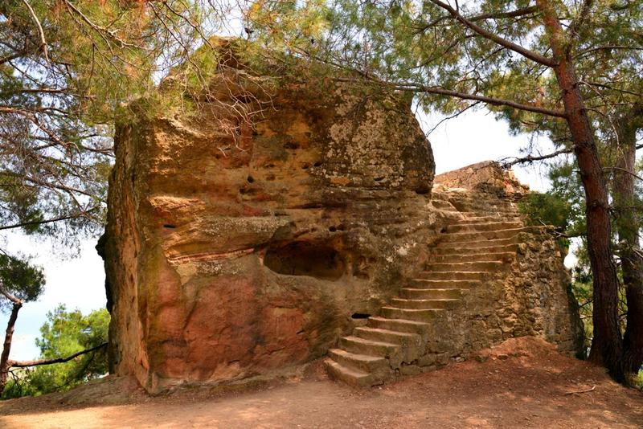
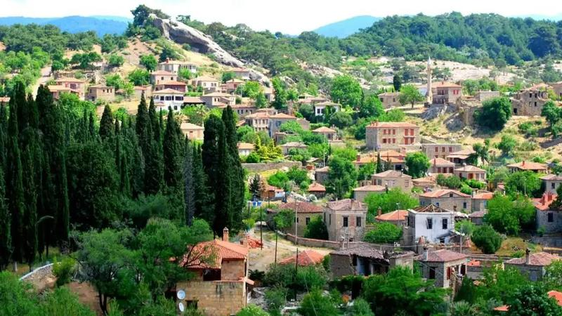
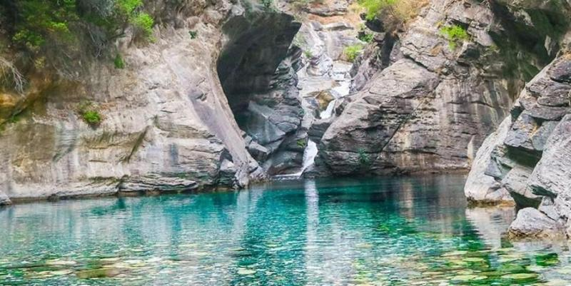
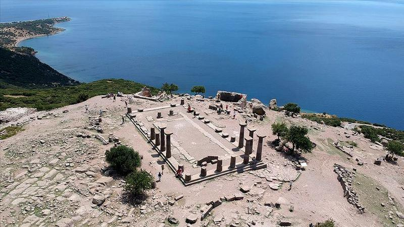
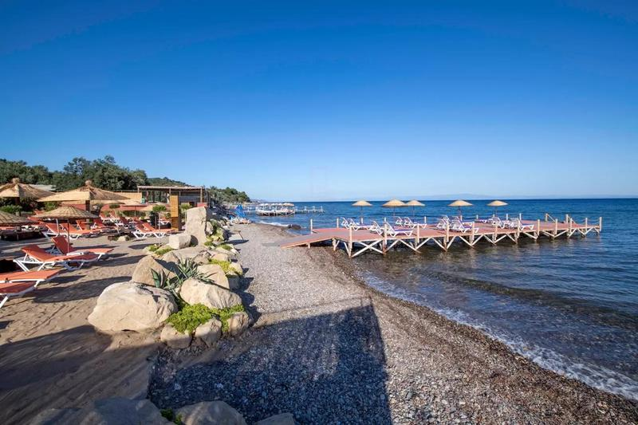

Kuzey Ege'yi keşfet
Küçükkuyu'dan Ayvalık'a uzanan eşsiz Körfez hattını keşfet.

Edremit Körfezi manzarasına sahip efsanevi bir nokta. Gün batımında eşsiz görüntüler sunar.

Taş evleri ve huzurlu sokaklarıyla bölgenin en güzel köylerinden biri.

Kaz Dağları'nın serin doğasında bulunan büyüleyici bir şelale.

Antik limanı, taş sokakları ve Athena Tapınağı ile ünlü tarihi bölge.

Turkuaz denizi ve sakin atmosferiyle bölgenin en sevilen koylarından biri.
Temiz havası ve yemyeşil doğasıyla doğa severlerin vazgeçilmez noktası.
27°C • Hafif Rüzgar